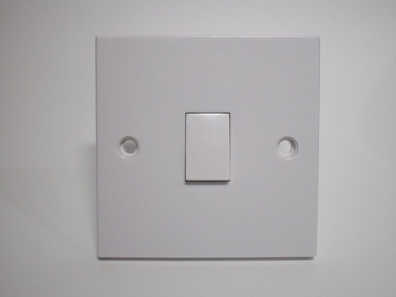
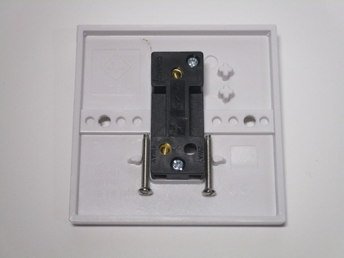
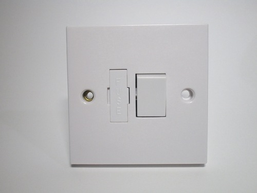
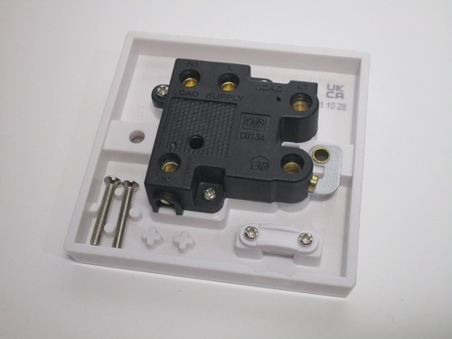
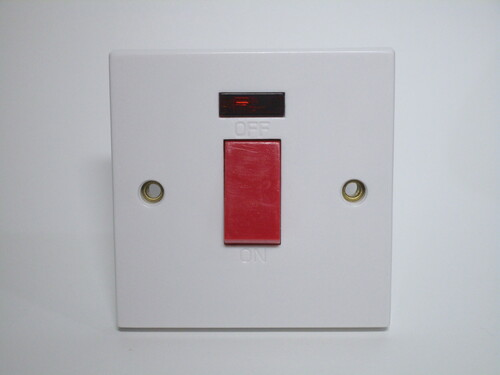
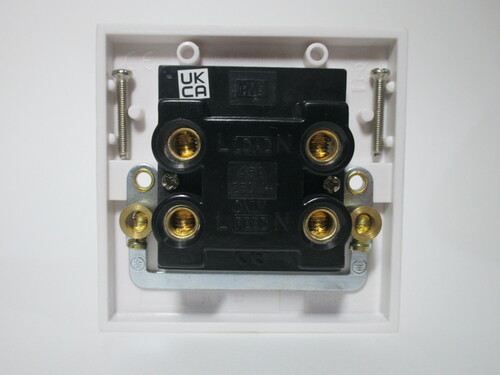
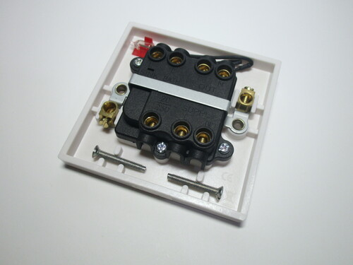
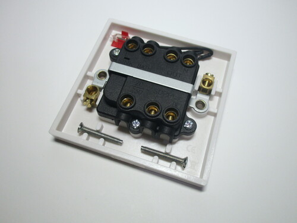

British electrical accessories
Electrical items used in the UK and Ireland differ considerably from continental European ones, despite the geographical proximity. They're built entirely as a single-block item, with the faceplate usually being part of the device itself and non-removable. As such, the screw holes holding it in place are visible.
There are two styles of wall boxes, a 2-gang one generally only used for power sockets and a 1-gang one used for most other types of electrical accessories. The latter is similar to the round European boxes, but not quite the same.
One-way light switch
Rating: 10A 250V
This is a standard type of light switch in the UK. This sort of design, with a small rocker switch which is pushed up and down to toggle the lights has been the default for decades. Note that the orientation of it is reversed from American (and, generally, also European) ones: on is down, while off is up. The depth of this device is extremely narrow - this is so it can fit very shallow types of wall boxes, which are often used for mounting light switches.
This specific one is a one-way switch, used for controlling lights from just one location. Two-way and intermediate switches, as well as models with multiple ones in a single item (up to three), are also available. Note that the nomenclature used for light switches in the UK is different from the one in the US; more information on this is available on the Terminology page.
 {kind=link}
{kind=link}
Fused connection unit
Rating: 13A 250V
This device is used to connect a hard-wired appliance to a circuit. UK sockets are generally on a ring circuit protected by a 32A breaker (or, in older installations, a 30A fuse). Because of this, a fuse is necessary to protect the cord of the device; this connection unit comes with a 13A one, which can be exchanged for a lower value. There's also a double-pole switch, for isolation when working on the connected appliance.
The fuse can be easily replaced by removing the plastic holder on the front, which can't be extracted fully to prevent it from being lost. On the bottom of the device there's a small indentation, which can be broken off in order to pass a cord through; a cord grip is present next to it to secure it.
Essentially, fused connection units such as this one are made to offer all the features of a separate plug and socket, without actually being a plug and socket.
 {kind=link}
{kind=link}
Isolator switch
Rating: 45A 250V
Isolator switches such as this one are used to safely disconnect and isolate an electrical appliance; the switch is double-pole, and thus also disconnects the neutral, an important measure to ensure the supply is completely isolated. This model has an indicator light at the front, which illuminates when the power is turned on.
For safety, in the UK it's mandatory to have an isolator switch for hard-wired devices, such as stoves and water heaters. Indeed, the high rating of this item (45A) indicates that this would be perfectly suitable to use with an electric stove. Such a high rating is necessary, as most UK homes are only supplied with one phase rather than three.
 {kind=link}
{kind=link}
Sink/bath isolator switch
Rating: 20A 250V
Aside from stoves, electric immersion heaters are another common hard-wired device in a British electrical installation. This switch is specifically meant for one, and as such has additional controls for it. Aside from the usual double-pole switch for isolation, there is also a red indicator lamp and a "sink/bath" switch. The latter is used to select between low- and high-power heating elements, depending on the amount of hot water needed.
The back of the device is more complex than the one shown previosly. The two switches are wired entirely separately: the main power switch has input and output terminals for line and neutral, and the neon indicator lamp is connected to its output. The sink/bath switch is just a single-pole one and has its own input terminal which can be connected to the line output of the previous one. Two earthing connections are also present.
 

{kind=link}